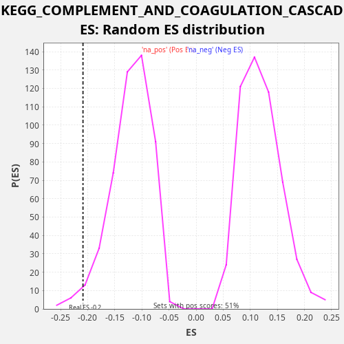

Profile of the Running ES Score & Positions of GeneSet Members on the Rank Ordered List
The same image in compressed SVG format
| Dataset | CCLE |
| Phenotype | NoPhenotypeAvailable |
| Upregulated in class | na_neg |
| GeneSet | KEGG_COMPLEMENT_AND_COAGULATION_CASCADES |
| Enrichment Score (ES) | -0.20872141 |
| Normalized Enrichment Score (NES) | -1.7307621 |
| Nominal p-value | 0.02244898 |
| FDR q-value | 0.07443878 |
| FWER p-Value | 0.864 |
| SYMBOL | RANK IN GENE LIST | RANK METRIC SCORE | RUNNING ES | CORE ENRICHMENT | |
|---|---|---|---|---|---|
| 1 | C4BPB | 39 | 4.529 | 0.0180 | No |
| 2 | SERPINE1 | 176 | 0.463 | 0.0319 | No |
| 3 | C3AR1 | 809 | 0.012 | 0.0250 | No |
| 4 | F3 | 1012 | 0.007 | 0.0361 | No |
| 5 | TFPI | 2297 | 0.001 | 0.0018 | No |
| 6 | CFI | 2591 | 0.001 | 0.0091 | No |
| 7 | CD55 | 2875 | 0.000 | 0.0169 | No |
| 8 | PROS1 | 4240 | 0.000 | -0.0207 | No |
| 9 | C8G | 5266 | 0.000 | -0.0441 | No |
| 10 | CFD | 5406 | 0.000 | -0.0304 | No |
| 11 | CD46 | 5431 | 0.000 | -0.0118 | No |
| 12 | MASP1 | 5956 | 0.000 | -0.0141 | No |
| 13 | CR2 | 6312 | 0.000 | -0.0094 | No |
| 14 | SERPING1 | 6347 | 0.000 | 0.0088 | No |
| 15 | F2 | 7386 | 0.000 | -0.0152 | No |
| 16 | BDKRB1 | 8104 | 0.000 | -0.0257 | No |
| 17 | CPB2 | 9940 | 0.000 | -0.0830 | No |
| 18 | SERPINF2 | 11161 | -0.000 | -0.1146 | No |
| 19 | F8 | 11221 | -0.000 | -0.0975 | No |
| 20 | FGA | 12897 | -0.000 | -0.1482 | No |
| 21 | MASP2 | 13336 | -0.000 | -0.1469 | No |
| 22 | C5 | 13882 | -0.000 | -0.1502 | No |
| 23 | F10 | 15278 | -0.000 | -0.1891 | Yes |
| 24 | FGB | 15364 | -0.000 | -0.1731 | Yes |
| 25 | C4A | 15723 | -0.000 | -0.1685 | Yes |
| 26 | C1R | 15972 | -0.000 | -0.1593 | Yes |
| 27 | C5AR1 | 17072 | -0.000 | -0.1858 | Yes |
| 28 | C4B | 17104 | -0.000 | -0.1675 | Yes |
| 29 | PROC | 17295 | -0.000 | -0.1558 | Yes |
| 30 | CD59 | 18387 | -0.001 | -0.1820 | Yes |
| 31 | C7 | 18628 | -0.001 | -0.1725 | Yes |
| 32 | PLAUR | 19453 | -0.002 | -0.1874 | Yes |
| 33 | BDKRB2 | 19533 | -0.002 | -0.1711 | Yes |
| 34 | VWF | 19715 | -0.002 | -0.1591 | Yes |
| 35 | C1S | 20025 | -0.003 | -0.1525 | Yes |
| 36 | PLAU | 20241 | -0.003 | -0.1419 | Yes |
| 37 | CFB | 20246 | -0.003 | -0.1225 | Yes |
| 38 | PLAT | 20374 | -0.004 | -0.1082 | Yes |
| 39 | C3 | 20440 | -0.004 | -0.0913 | Yes |
| 40 | F5 | 20627 | -0.005 | -0.0795 | Yes |
| 41 | A2M | 20718 | -0.006 | -0.0637 | Yes |
| 42 | F12 | 21294 | -0.011 | -0.0682 | Yes |
| 43 | C9 | 21578 | -0.016 | -0.0604 | Yes |
| 44 | FGG | 21898 | -0.026 | -0.0542 | Yes |
| 45 | F2R | 22648 | -0.121 | -0.0660 | Yes |
| 46 | C2 | 22783 | -0.170 | -0.0521 | Yes |
| 47 | CFH | 22858 | -0.208 | -0.0356 | Yes |
| 48 | SERPIND1 | 22988 | -0.304 | -0.0214 | Yes |
| 49 | SERPINA5 | 23407 | -1.317 | -0.0193 | Yes |
| 50 | THBD | 23505 | -1.965 | -0.0037 | Yes |
| 51 | SERPINA1 | 23844 | -13.170 | 0.0017 | Yes |

{kind=link}
{kind=link}